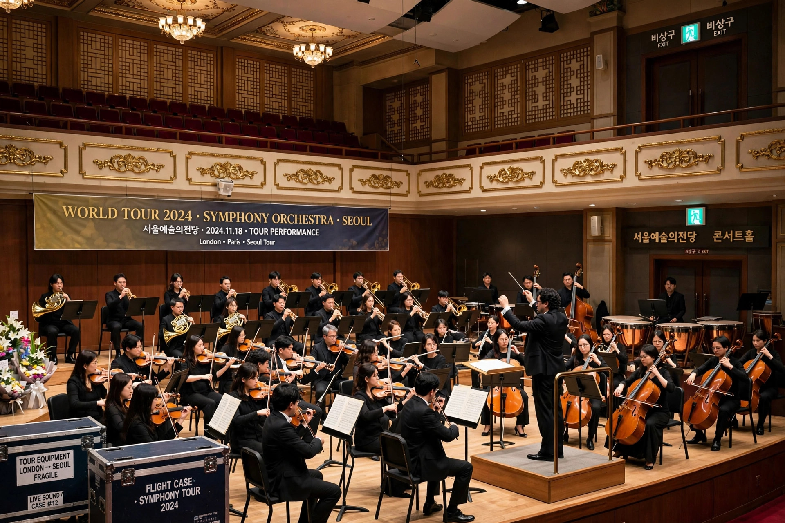

Cultural diplomacy is a type of public diplomacy and soft power that includes the "exchange of ideas, information, art, language and other aspects of culture among nations and their peoples in order to foster mutual understanding". Its purpose is to build relationships and enhance socio-cultural cooperation between countries, often as a foundation for political and economic relations.

Many states maintain dedicated cultural institutes abroad, including the British Council (United Kingdom), the Goethe-Institut (Germany), the Alliance Française and Institut français (France), the Instituto Cervantes (Spain), and China's Confucius Institutes. These organisations promote language teaching, cultural events, and educational cooperation.
Cultural exchange has accompanied diplomacy for centuries, but institutionalised cultural diplomacy expanded greatly during the twentieth century, particularly during the Cold War, when both superpowers used exhibitions, tours by artists and athletes, and student exchanges to project influence. Notable episodes include the Soviet–American cultural exchanges under the 1958 Lacy–Zarubin Agreement and the "ping-pong diplomacy" that preceded the normalisation of US–China relations in the 1970s.